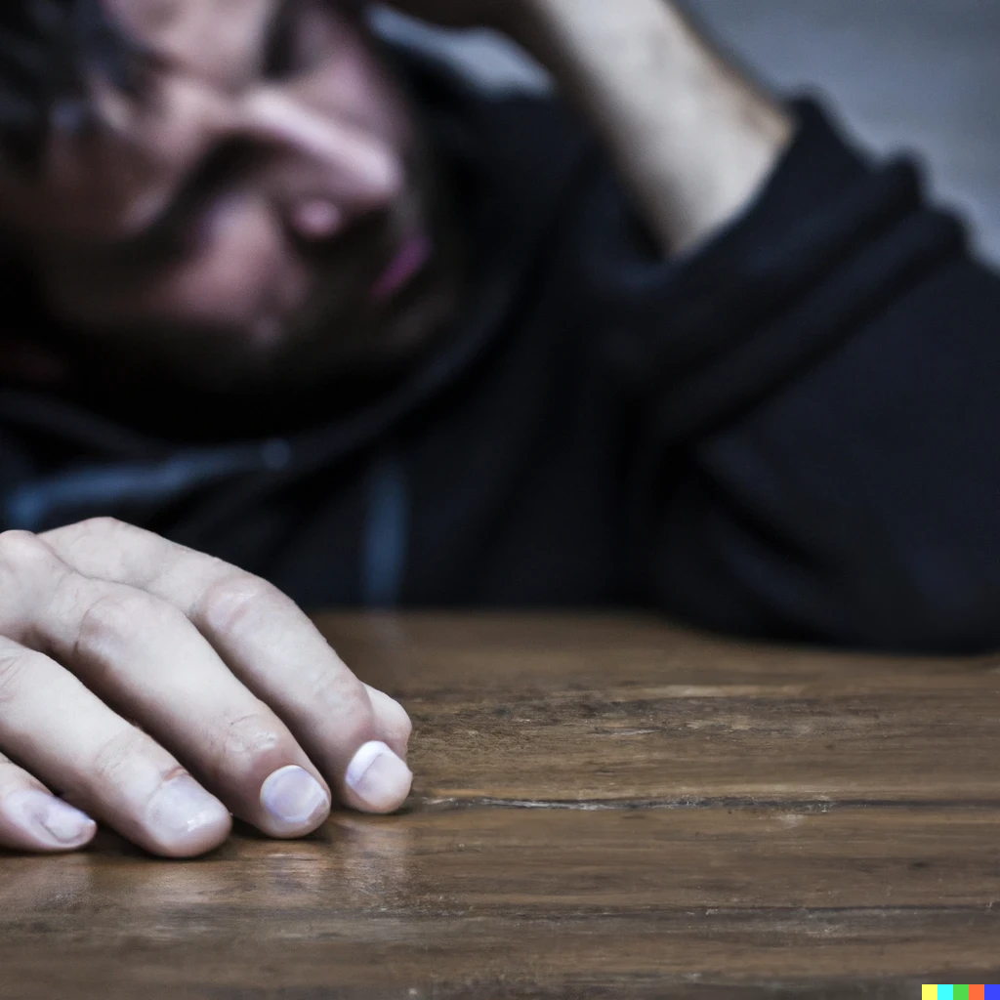

Welcome to Roots of Addiction!
Right Now!
We are in a Global Opioid Overdose Epidemic
This crisis has underscored the urgent need for innovative and effective solutions. Traditional treatment models, while they have served us in the past, are now struggling to combat the scale and complexity of this issue. The loss of life has been staggering and unacceptable.
Our mission is to introduce a dynamic, modern approach to addiction treatment. We believe that by leveraging cutting-edge technology and evidence-based practices, we can offer a more robust response to this crisis. Join us as we strive to turn the tide on the opioid epidemic one life at a time.
Self-esteem, in particular low self-esteem, has been proven to be a main component of addiction. Since most of us experience low self-esteem at times, how can we avoid being pulled into addictive behaviours?
Stats Graphic thanks to @thebeautyofdata on Tiktok
Our cognitions of ourselves and our self-talk affect our self-esteem. One strategy that has been proven to help change internal perceptions is Cognitive Behavioral Therapy, a form of psychotherapy you can learn to do yourself or have a professional help you with. "In fact, it’s estimated that roughly 85% of people worldwide (adults and adolescents) have low self-esteem."
Psychology TodayIf you need help, reach out. There are plenty of 24/7 supports you can speak with anonymously.
I need to speak to someone right away!24/7 supports
Additionally, if you want to learn more about addiction, you can visit the American Psychological Association's website or the Self-Empowering Addiction Treatment Association (SEATA) website. These resources provide valuable information and resources for understanding and addressing addiction. Remember, you are not alone, and there is help available to support you on your journey to recovery.
Learn about addictionAmerican Psychological Association
also a link to Self-Empowering Addiction Treatment Association (SEATA)
Psychological Association Division 50